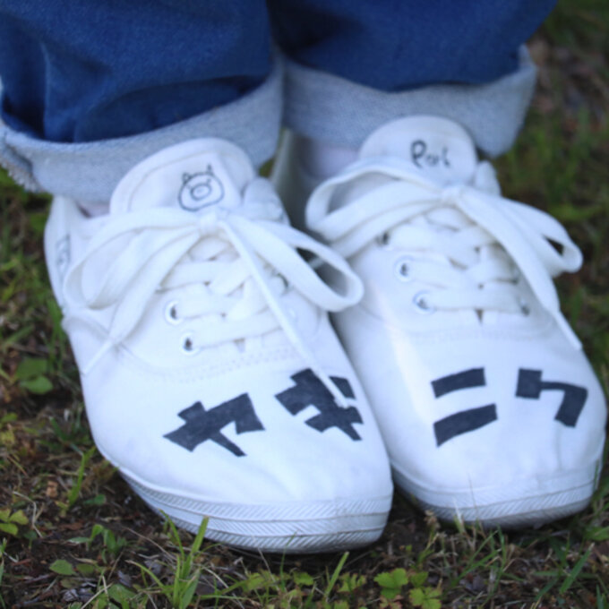
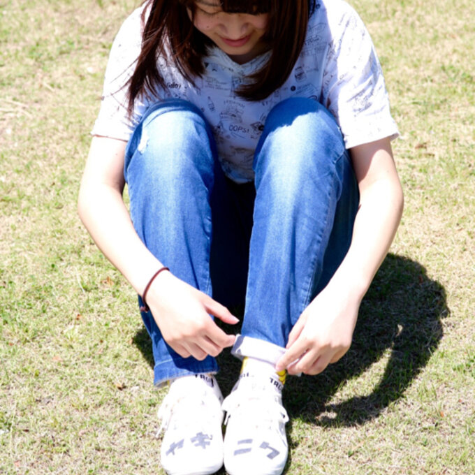

TOP
WORK
CONTACT
2016/4
ヤキニク靴
ヘンテコな靴を作りたくて「ヤキニク」をモチーフにデザインしました。
ヤキニク
私は焼き肉が大好きだったので、高専2年の時に焼き肉の靴を作ってみました。
ハンドメイドマーケット mineで販売しました。商品ページは
こちら
デザイン
 
Related Works
ポップおちょこ
2020.7
ポップでかわいいおちょこがあったら面白いなという発想から生まれました。
Watch more